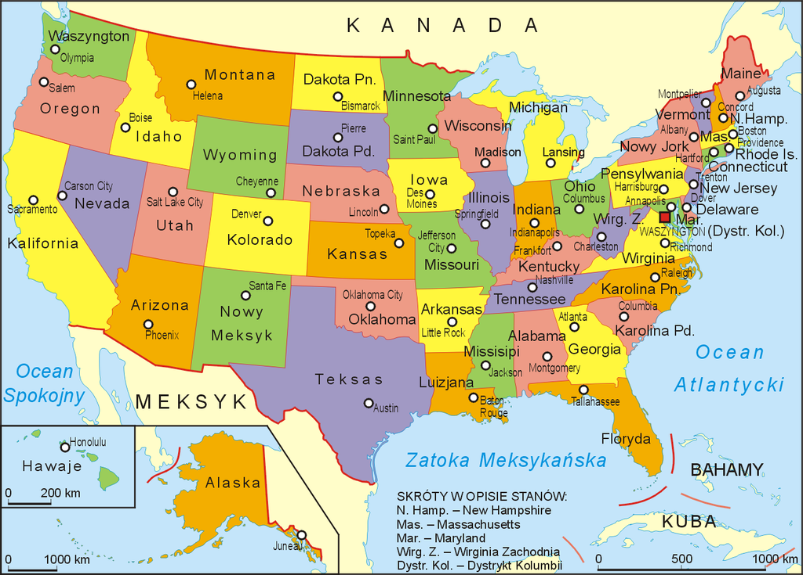

Stany Zjednoczone składają się z 50 stanów + 1 okręg (Okręg stołeczny – dystrykt Kolumbii (District of Columbia)). Wszystkie stany USA (z wyjątkiem Alaski i Luizjany) dzielą się na hrabstwa (w Luizjanie używana jest nazwa „parafii” w odniesieniu do hrabstw) – jest ich 3048. Niektóre jurysdykcje nazywają siebie „wspólnotami” (Commonwealth), a nie stanami (State).
Stany federalne:
-Alabama,
-Alaska,
-Arizona,
-Arkansas,
-Connecticut,
-Dakota Południowa,
-Dakota Północna,
-Delaware,
-Floryda,
-Georgia,
-Hawaje,
-Idaho,
-Illinois,
-Indiana,
-Iowa,
-Kalifornia,
-Kansas,
-Karolina Południowa,
-Karolina Północna,
-Kentucky,
-Kolorado,
-Luizjana,
-Maine,
-Maryland,
-Massachusetts,
-Michigan,
-Minnesota,
-Missisipi,
-Missouri,
-Montana,
-Nebraska,
-Nevada,
-New Hampshire,
-New Jersey,
-Nowy Jork,
-Nowy Meksyk,
-Ohio,
-Oklahoma,
-Oregon,
-Pensylwania,
-Rhode Island,
-Teksas,
-Tennessee,
-Utah,
-Vermont,
-Waszyngton,
-Wirginia,
-Wirginia Zachodnia,
-Wisconsin,
-Wyoming.
Terytoria zależne
-Samoa Amerykańskie,
-Baker,
-Guam,
-Howland,
-Jarvis,
-Johnston,
-Kingman,
-Midway,
-Navassa,
-Mariany Północne,
-Palmyra,
-Portoryko,
-Wyspy Dziewicze Stanów Zjednoczonych,
-Wake